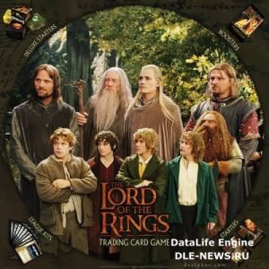
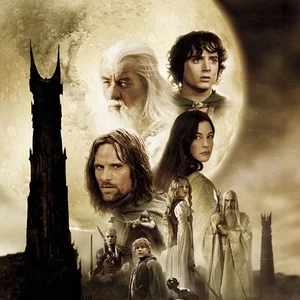
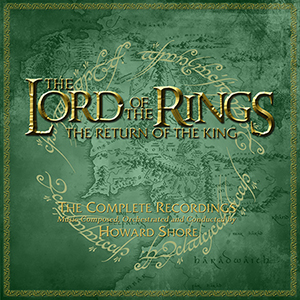
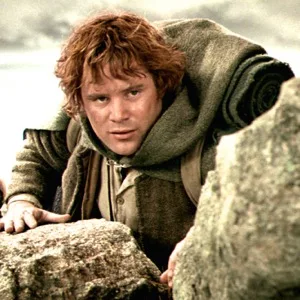
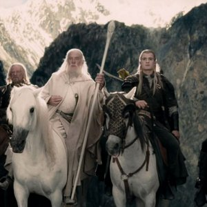

No es importante saber cuánto tiempo queda, sino qué hacer con el tiempo que se te concede.
El viaje no termina aquí. La muerte solo es un camino que todos tenemos que tomar.
No diré no lloréis, pues no todas las lágrimas son amargas.
Solo tú puedes decidir con el tiempo que te has dado.
Es sabiduría reconocer la necesidad, cuando todos los otros cursos ya han sido considerados, aunque pueda parecer locura a aquellos que se atan a falsas esperanzas.
Foto 1

Foto 2
Foto 3

Foto 4

Foto 5

Foto 6

Foto 7
Foto 8